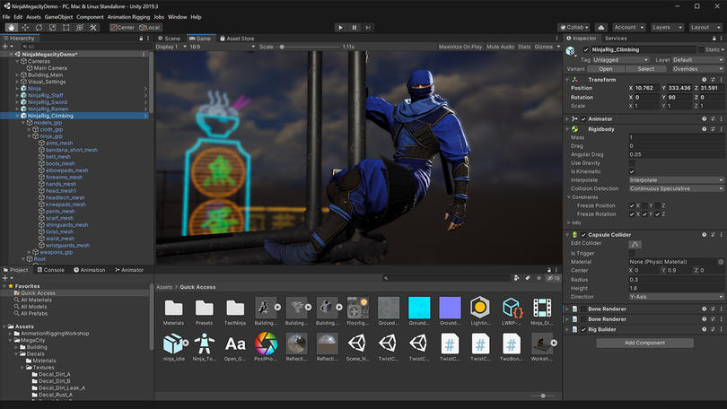
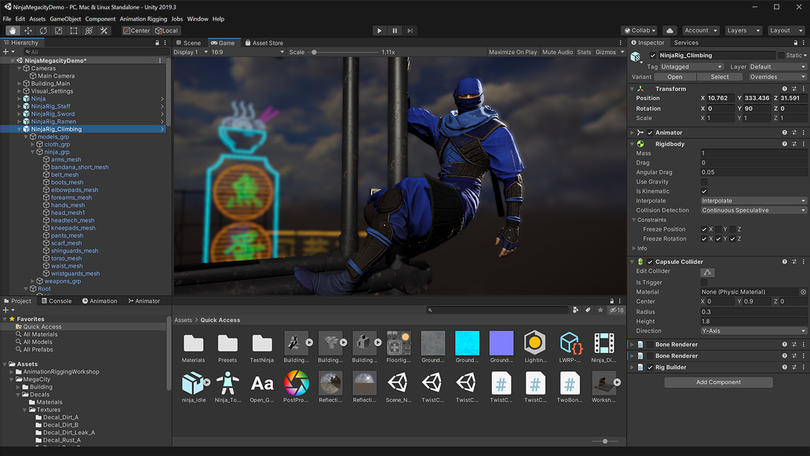

MOTORES DE JUEGOS
Un motor de juego es un software que proporciona una serie de herramientas y funcionalidades para el desarrollo de videojuegos. Los motores de juego permiten a los desarrolladores crear, diseñar y programar juegos de forma más eficiente al proporcionar herramientas para la creación de gráficos, físicas, sonido, inteligencia artificial, entre otros aspectos.
Algunos de los motores de juego más populares en la actualidad son:
1. Unity: Es uno de los motores de juego más utilizados en la industria del desarrollo de videojuegos. Permite crear juegos para múltiples plataformas como PC, consolas, dispositivos móviles y realidad virtual.
 

2. Unreal Engine: Desarrollado por Epic Games, es otro motor de juego muy popular que se destaca por sus impresionantes gráficos y capacidades de renderizado en tiempo real. Se utiliza en la creación de juegos AAA y también en aplicaciones de realidad virtual y aumentada.


3. Godot Engine: Es un motor de juego de código abierto que ha ganado popularidad en los últimos años por su facilidad de uso, flexibilidad y comunidad activa de desarrolladores.

4. CryEngine: Conocido por su capacidad para renderizar entornos naturales y realistas, CryEngine es utilizado en la creación de juegos con gráficos impresionantes.
Estos son solo algunos ejemplos de motores de juego populares, pero existen muchos otros en el mercado, cada uno con sus propias características y ventajas. La elección del motor de juego adecuado dependerá de las necesidades y objetivos específicos del proyecto de desarrollo.